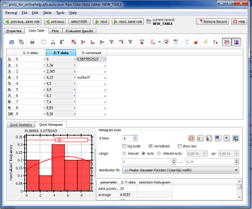
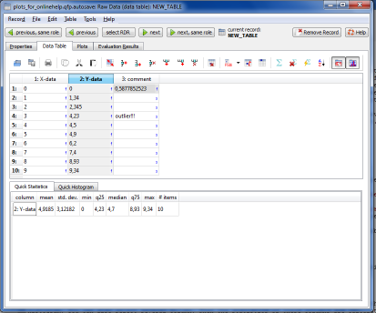
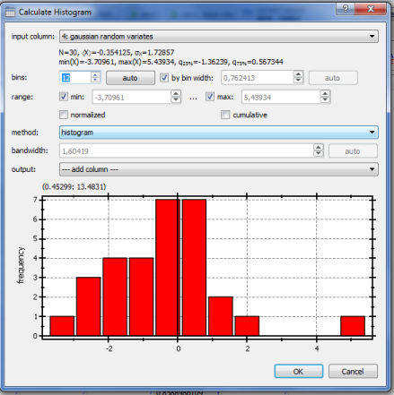
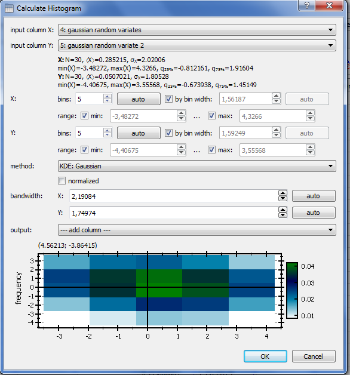

The main table allows direct editing of data in each cell. At the bottom right of each cell, the data type is specified. The data types are:
You can start editing a cell value by double-clicking into the cell, or by simply starting to type a value. If the editor is open, you can use the up/down cursor keys to navigate up/down. The key ENTER will also navigate one cell down. The key TAB wil navigate to the next cell on the right and SHIFT+TAB to the neighboring cell on the left. $$note: TAB, SHIFT+TAB and ENTER jump to the first/last cell in the next/previous line, if you try to navigate beyound the borders of the table!$$
The contents of all currently selected cells can be deleted by pressinf DEL or with 
Column Properties
In addition to the cell-properties, there are also column-properties, such as the column title or a column expression. These are accessible by double-clicking the column-header. A dialog will open, which allows to specify these properties:
- column title
- a comment for the column
- If the column represents an image, the width of the image in pixels. Images are represented in row-major format, which means, that the column will first contain the pixel values (left to right) of the first row, then of the second row, ... In order to decode this, the width of the image (i.e. the width of one row) has to be known.
- A column expression. This is a math expression, which should evaluate to a vector of values (either string, boolen or a number). The values in the column are then taken from the resul of this expression. $$see:See this tutorial for further details.$$
Expressions
The table plugin has the capability to perform calculations on the data in the table. It uses QuickFit's internal math expression parser for this task. Two types of expressions are available:
- Column expressions (see the section on column properties above), which evaluate to a vector of values and calculate the contents of a complete column
- Cell expressions, which evaluate to a single number/string/boolean and set the value of a single cell.
You can set the expression of a cell (or of multiple cells at the same time) by selecting the cell and clicking the button  . Equivalently you can use the short cut
. Equivalently you can use the short cut =. Existing cell expressions can be edited the same way, or by clicking on the that appears within the cell, when the cell is double-clicked. You can remove a cell or column expression by selecting the cell/column and using the function  .
.
Cells in which the contents is calculated by an expression have a gray background!
QuickFit uses the following algorithm to evaluate the cells:
- evaluate all column expressions from left to right
- evaluate all cell expressions
- evaluate all column expressions from right to left
- evaluate all cell expressions
These four steps are iterated over several times (max. 20) to ensure, that also cells, that depend on other cells have correct values. The iteration stops, if no more changes in any cell were detected, or after 20 iterations. $$note:If you generate random numbers in a cell or column, the evaluation algorithm would ALWAYS performs 20 iterations, since it always detects a change for every call of a random function. To circumvent this problem QuickFit seed the RNG of the parser with a specific seed value for every cell. These seed are still random (for every call of the evaluation algorithm), but do not change during one run of the evaluation algorithm! This function is swicthed on by default and can be switched off with the menu entry Table | use single seed for reevaluations$$
$$note:If you cange a single dtaa value, or a single cell or column expression, you have to reevaluate ALL expressions in the table, as there may be indirect dependencies. This can be achieved by clicking on  .$$
.$$
Preevaluated Expressions
The table plugin also offers the option to enter a script, which is evaluated before any expression is evaluated. This way you can define global presets, such as variables with a specific value, or custom functions, that are valid throughout the whole table (i.e. for cell and column expressions). This preevaluated script can be entered in the table RDR editor by checking the button  , or using the menu entry Tool | Preevaluated Expressions. After the click an editor will open at the bottom of the table editor, where you can enter the expression.
, or using the menu entry Tool | Preevaluated Expressions. After the click an editor will open at the bottom of the table editor, where you can enter the expression.
Changing the table size
There are several options, that allow to change the table size:
- The button
 resizes the table to a user-definable number of columns and rows.
resizes the table to a user-definable number of columns and rows.
- New column can be appended with

- New column can be inserted next to the currently selected cell with

- New rows can be appended with

- New rows can be inserted next to the currently selected cell with

- The selected rows/columns can be removed from the table with
 and
and 
- Finally, if a column expressions returns more items, than rows in the table, the table is extended automatically.
Saving/Loading the Table
You can load data from an external data file and save the table contents into such a file using the buttons 
 . The functions support several file formats (CSV, SYLK, ...) and especially QuickFit Table XML, which supports most of the properties of a table (e.g. expressions!).
. The functions support several file formats (CSV, SYLK, ...) and especially QuickFit Table XML, which supports most of the properties of a table (e.g. expressions!).
Importing Data into Table
You can use the button  to open a data file on the harddisk and import its contents into the current table. After selecting teh file to import, a new dialog will open, which shows the data in the new file and lets you select those cells, that should be imported. Here you can also set, whether to append the cells to the current table or to overwrite the current cells.
to open a data file on the harddisk and import its contents into the current table. After selecting teh file to import, a new dialog will open, which shows the data in the new file and lets you select those cells, that should be imported. Here you can also set, whether to append the cells to the current table or to overwrite the current cells.
Table Templates
You can also save the current table as a template (basically only the size of the table and the table properties will be stored into a file). This way you can recreate a table in another project. The template functions are located in the file menu: File | load/save table template.
The same can be achieved with the clipboard by using the functions Table | copy/paste selected table clumn template.
Quick Statistics
The table plugin as a QUickStatistics feature, which allows to easily calculate the statistical properties of a column and to draw histograms. To activate these two features press:
 for the QuickStatistics tool
for the QuickStatistics tool for the QuickHistograms tool
for the QuickHistograms tool
In both cases a pane will open up at the bottom of the window, which contains a table with the column statistics and a plot of the column histogram. You can also select several column. Then the statistics of these columns are calculated separately and several histograms are displayed.


Advanced Functions
Several advanced functions exist in the menus of the table editor:
- Table | set column values opens a dialog, which allows you to generate a column of linearly or logaritmically spaced values.
- Table | calculate histogram opens a dilaog, which allows to calculate a histogram of the values in the curently selected column.

You have to the possibility to choose different methods for the histogram:
- histograms
- several different kernel density estimates (KDE) with different basis functions. A KDE is basically a smoothed histogram, where a narrow function is positioned at the value of each datapoint and then the functions are summed up.
For the histograms you can specify ranges and the number of bins, or the bin width. It is also possible to calculate cumulative histograms and to normalize the histogram (with the number of used datapoints).
The resulting histogram is stored in two columne (with the range centers and the histogram values) in the table
- Table | calculate 2D histogram This function requires two columns (euither selected or choosen at the top of the window) and calculates a 2-dimensional histogram or kernel density estimate. Also here the result is stored as a column in the table.

- sort selected cells sorts the currently selected cells, according to a user-selectable column.